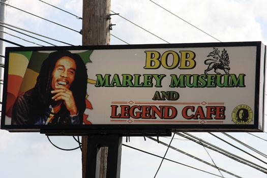
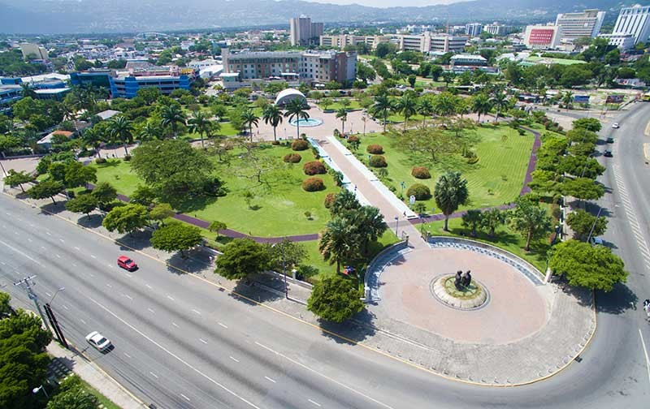
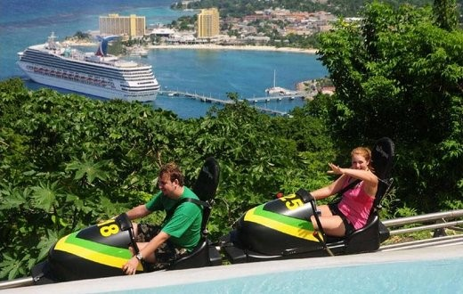

Kingston, Jamaica's vibrant capital, is both a city and parish. On the island's south-eastern shores, the busy Kingston harbour is one of the oldest seaports in the world.
Its name is understood to have originally been King's Town, and eventually shortened to Kingston. Although it is the smallest parish, it is the largest city in Jamaica, with a population of 89,057 in metropolitan Kingston. Many businesses, government offices, and schools are headquartered here and it is a vital centre for sports and entertainment as well. Kingston is the birthplace of many famous Jamaicans, including National Hero George William Gordon, Bob Marley's reggae musician sons, Ziggy and Damian Marley, and musical artists Sean Paul, Shaggy, and Beenie Man.
Nestled in the heart of urban New Kingston is one of Jamaicans greatest historical treasures, Emancipation Park. It is themed a Tribute to Freedom and lives up to its theme visually with an 11ft bronze sculpture, named Redemption Song.
Emancipation Park is located about 30-minutes drive from the Norman Manley International Airport. It is directly across the street from the Jamaica Pegasus Hotel, and just minutes away from the Jamaica Hilton and other hotel accommodations. Art enthusiasts will appreciate at the 11ft. Bronze sculpture created by acclaimed Jamaican artist, Laura Facey. Those with an eye for detail may notice the West African Adinkras (Spiritual Symbols) which are interwoven throughout the parks decor.
Nature lovers will be delighted by the amazing tropical flowers and plants, which provide various punches of color throughout the park. Red Geraniums compliment Yellow Lantana and contrast beautifully against the Pink and Peach Roses found in well-maintained flowerbeds strewn throughout the park. Jamaican National Lignum Vitae trees and Tree of Life flowering plants also dot the environment, simultaneously beautifying, providing shade and channeling the light breeze throughout the park.
The center of the park features an expansive but not obtrusive stage with modern facilities for live entertainment. On Emancipation night, this stage comes alive with the best of Jamaican folk and local musical artists. On any given day, you will find people playing chess or ping pong on the built in tables. There are also various aerobics classes taking place on the well-manicured lawn.
The population of Hanover is about 70, 000, and much of the land is rural, used primarily for agricultural crops such as yams, rice, breadfruit, sugar cane, pimento, and arrowroot. Pigs, cattle, and goats are also raised here. Hanover is the birthplace of Jamaica's first prime minister Sir William Alexander Clarke Bustamante, a National Hero. Some of the places of interest in Hanover includes:
Traveling east of St. James, the next parish you come to is Trelawny. Founded in the late 18th century, it was named after then-governor, Sir William Trelawny. The capital city of Falmouth is one of the best preserved historical towns in the Caribbean and it also hosts the largest cruise ship port in the region. The population of this parish is about 75, 558. It is a major producer of sugar cane, with sugar and rum being its main products. Many other fruits and vegetables are also grown here. Trelawny is the birthplace of celebrated Olympic runner Usain Bolt. Places of interest in Trelawny includes:
The parish of St. James is also located along the island's northern coast, just east of Hanover. A very beautiful parish, St. James is home to Montego Bay, it is capital city and the islands second capital.
Famous for its luxurious resorts and glorious sandy beaches, Montego Bay is the most visited city on the island and a popular cruise ship port, with tourism being the primary industry. The parish got its name from James II the Duke of York, who eventually became king. The population of St. James is 184, 662. The National Hero, Samuel Sharpe was born here. Some of the points of interest in St. James includes:
As the largest of Jamaica's parishes, St. Ann lies right in the middle of the island's northern coast. Its name was given to honor Anne Hyde, the wife of King James II, and it was originally spelled St. Anne.
The capital is St. Anns Bay, but the largest and most visited city is Ocho Rios, a popular centre for tourism and a port-of-call for many cruise lines. Because of its abundant vegetation, St. Ann is known as the Garden Parish. The major industries here besides tourism include bauxite and some farming. It has a population of 173, 232. This parish is the birthplace of legendary reggae artist Bob Marley and National Hero Marcus Garvey. These are some of St. Anns most notable points of interest: